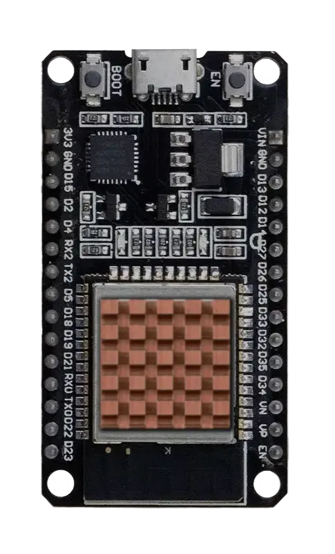
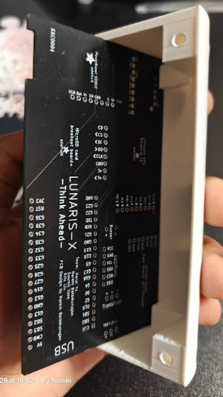
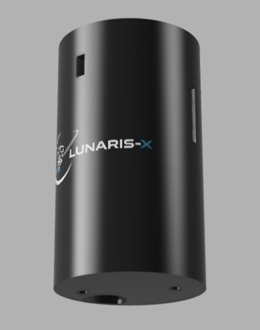
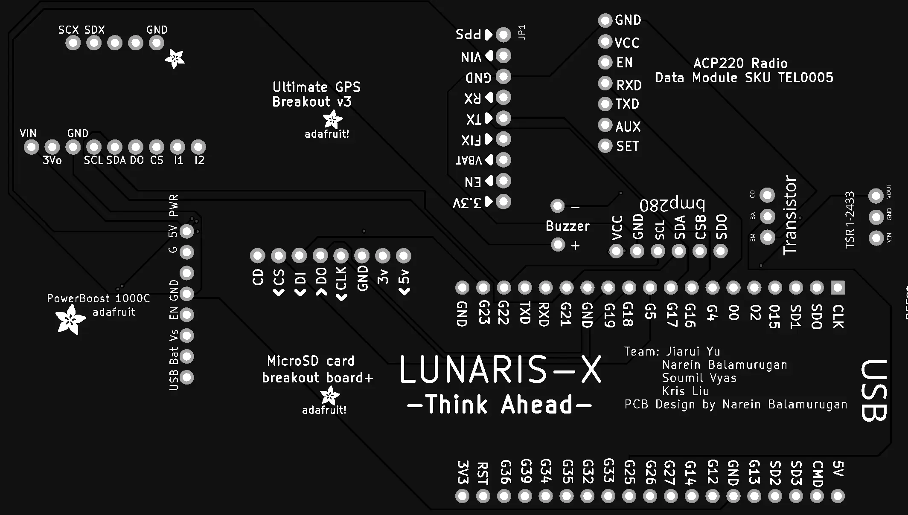
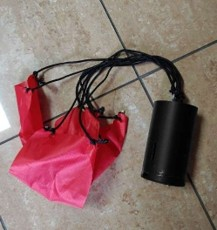
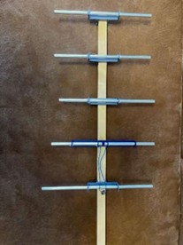

System Specs
Hard data on the internal mechanics, structural composition, and processing topology of the Lunaris-X CanSat.
Payload Breakdown
Hardware Logistics
Processing Capabilities
The central brain of the CanSat is built around the modern ESP32 microcontroller, drastically outperforming standard Arduino kits in both capability and efficiency. Key highlights include:
- Lower operational energy draw, allowing for smaller, reusable battery variants that prevent E-Waste.
- Significantly higher CPU clock speed to execute advanced logging and 3D angle conversions instantly.
- Expansive GPIO interface mapping, fully eliminating standard hardware bottlenecks.

Airframe Evolution
To create a resilient hull, we experimented constantly. Our original split-half concept exhibited quality flaws and structural weaknesses. Eventually, we moved to a robust bottom-mounted lid system. Internally, tight slots keep the PCB completely locked down against physical G-forces.

Iteration V1 Concept

Final 3D Render
Unified Flight Board
To solve standard hand-wiring failure rates, we designed a custom PCB housed perfectly within the PETG hull. The integration of copper tracking over gold not only cut material costs but ensured high-stress durability was permanently maximized alongside the resilient 9-axis IMU logging system.


Parachute Dynamics
Driven by ESERO guidelines, we selected a high-drag cross-parachute totaling ~715cm². Engineered with vivid red ripstop fabric and 50kg paracord, it safely absorbs deceleration shockloads and guarantees a stable descent profile.

Ground Station Network
Onboard Setup: A strictly lightweight quarter-wave wire antenna provides continuous
coverage from inside the CanSat without adding excessive mechanical mass during launch.
Tracking Hardware: On the ground station, we established a 5-element Yagi directional
array. Featuring a split dipole driven element, a posterior reflector, and triple forward directors, it
effectively focuses the RF radiation pattern to drastically multiply signal gain across our 433 MHz link.